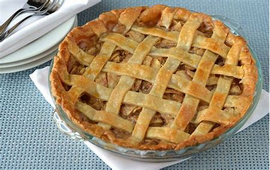
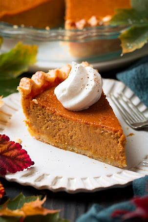
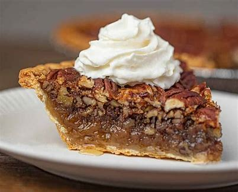
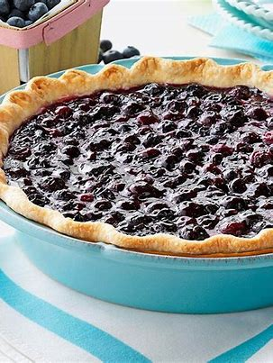
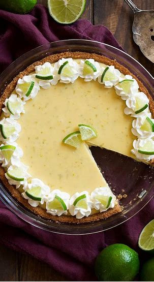
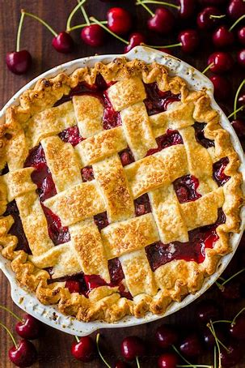
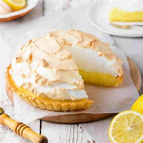
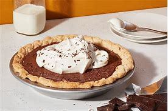
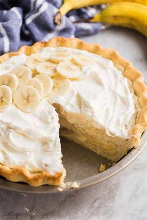
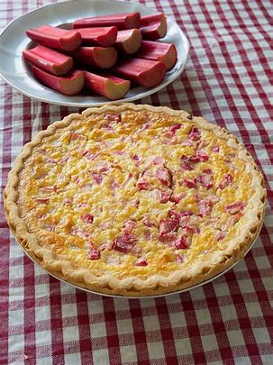

Introduction to Pie Heaven
There's nothing quite like a delicious pie to satisfy a sweet (or savory) craving. From fruity to creamy, pies come in all shapes and flavors. Here’s a look at ten different pies, along with my personal opinions on each.
1. Apple Pie
Classic, comforting, and packed with cinnamon-spiced apples, apple pie never fails to deliver. Whether it's served warm with a scoop of vanilla ice cream or enjoyed cold, it’s hard to beat this traditional favorite.
2. Pumpkin Pie
A must-have for Thanksgiving, pumpkin pie is smooth and creamy with just the right amount of spice. Its rich flavor, especially when topped with whipped cream, always brings a nostalgic warmth.
3. Pecan Pie
Pecan pie is decadence in a crust. The gooey, sweet filling paired with the crunchy pecan topping creates a perfect balance of textures. However, it can be too sweet for some, so it’s best enjoyed in small slices.
4. Blueberry Pie
Fresh and fruity, blueberry pie has a delightful tanginess that contrasts with its buttery, flaky crust. When the berries are in season, this pie is unbeatable, though it can sometimes be overly juicy if not baked just right.
5. Key Lime Pie
Key lime pie is the ultimate choice for those who prefer a tart dessert. The zesty lime flavor paired with a graham cracker crust creates a refreshing contrast. Perfect for summer, but a little too tangy for every occasion.
6. Cherry Pie
With its sweet and sour filling, cherry pie is a burst of flavor in every bite. While it’s not as versatile as apple pie, it offers a lovely punch of tartness. Some versions can be overly sweet, though.
7. Lemon Meringue Pie
This pie combines a bright lemon curd with a cloud-like meringue topping. It’s the perfect balance of tart and sweet, though the meringue can sometimes be tricky to get just right.
8. Chocolate Cream Pie
For chocolate lovers, this pie is pure heaven. The creamy, rich chocolate filling contrasts wonderfully with a light whipped cream topping, but it can be too rich for some people’s tastes.
9. Banana Cream Pie
Creamy and sweet, banana cream pie is both light and indulgent. The layers of banana, custard, and whipped cream create a perfect harmony of textures, though it might be too light for those who prefer a richer dessert.
10. Rhubarb Pie
Rhubarb pie is a love-it-or-hate-it option. Its tartness is bold and distinct, making it stand out from the sweeter pies on this list. While it’s a refreshing change of pace, it’s not for everyone.
Final Thoughts
Each of these pies brings something unique to the table, whether you’re a fan of sweet, tart, or rich flavors. My personal favorite? Apple pie. It's a timeless classic that delivers every time, but I wouldn’t say no to a slice of chocolate cream or blueberry pie either!